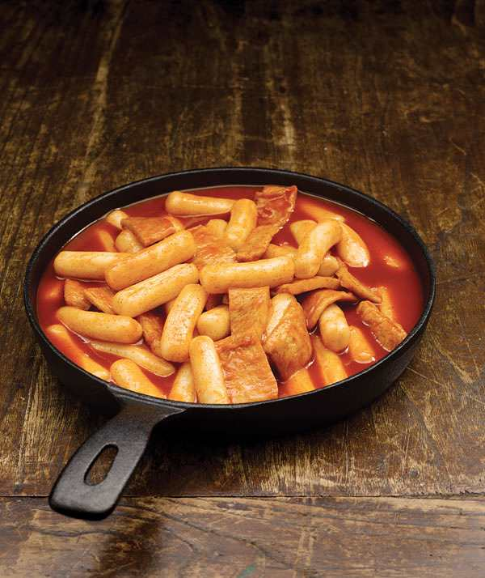

Topokki (stir-fried rice cakes) is representative of hot Korean dishes spiced with Gochujang (red chili paste). Everybody loves Topokki. Even children, who have yet to develop a taste for spicy food(red chili paste), food, enjoy Topokki, even if they have to drink lots of water to cool their tongue. It is the national street food of Korea.

Gungjung topokki, A Colorful Dish for Royalties
Originally, Topokki was not a spicy dish. In the royal courts of Joseon, it was prepared by simmering beef, carrots, onions, Pyogo (shitake) mushrooms and other ingredients together with rice cakes in soy sauce. The colorful ingredients - black Pyogo mushrooms, white onions, red carrots and peppers, green chili peppers, and yellow egg garnish - were visually as well as nutritionally harmonious.
Gochujang Topokki Debuts in the 1950s
It is believed that Topokki seasoned with spicy Gochujang paste first appeared in the 1950s and became widely popular in the 1970s. Because Topokki in this early incarnation was a working-class snack, flour, instead of rice, was used to make the finger-like Tteok sticks. The dish was an instant hit and became the most popular snack item along with ‘Odeng’ (fish cake) soup. The history of the Sindang-dong Topokki alley, which is the most famous row of Topokki shops in Korea, dates back to the 1970s. There was once a famous Topokki restaurant named ‘Babodeul’ (Fools). To please its student clientele, the restaurant installed a music system and hired an amateur DJ to play songs on request. Their romantic concept of ‘listening to favorite songs while enjoying Topokki’ proved extremely popular and led to the establishment of numerous restaurants under similar themes.
Gungjung Topokki for Healthy Skin
Gungjung-Topokki, which combines meat with vegetables, is a nutritionally balanced dish. The vitamins in carrots and cabbage promote red blood cell production and healthy skin. The gooey substance in the straw mushrooms gives luster to the skin, and the fibers help the body flush out toxins.